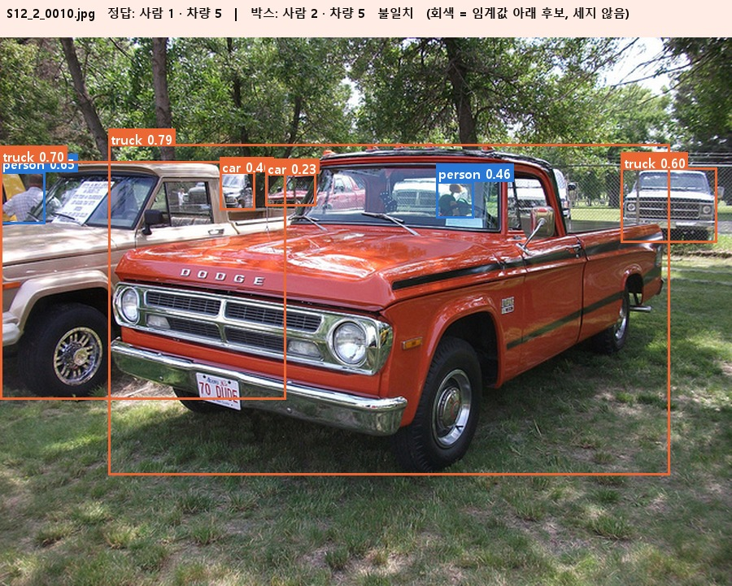
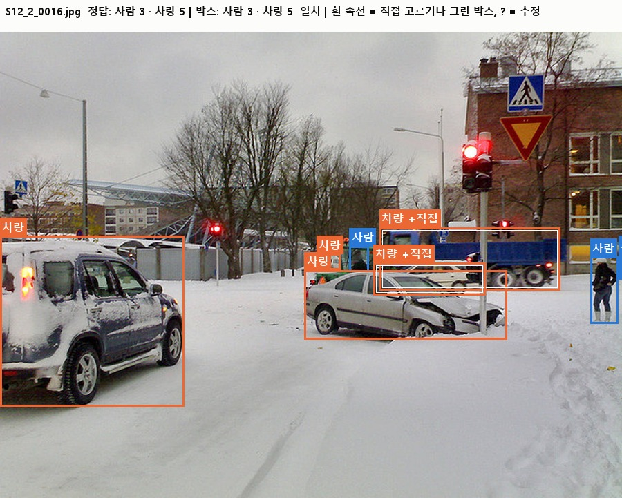

person_count| 문제 2 | 문제 4 | |
|---|---|---|
| 공통 풀이 | COCO 사전학습 yolov8n 추론만 (학습 없음) → 여러 관점의 박스를 합쳐 중복 제거 → 임계값 이상만 센다 | 문제 2와 같은 방식, 사람·차량을 따로 설정 |
| 서로 다른 점 | 사람이 많고 작다(정답 4~13명): 큰 해상도 + 타일, 예측 하한 4 | 사람 적고(0~11) 차량 0~7대: 반전 포함 6관점, 차량은 크기 비율 규칙 |
| 제출 파일 | filename,person_count 30행 | filename,person_count,vehicle_count 30행 |
| 항목 | 문제 2 | 문제 4 |
|---|---|---|
| 입력 | COCO 2017 validation 생활 사진 (군 행사 사진 아님) | COCO 2017 validation 생활 사진 |
| 학습 / 평가 | 30장 / 30장 (정답 수량 person_count만 있고 박스 라벨 없음) | 30장 / 30장 (person_count, vehicle_count, 박스 라벨 없음) |
| 정답 정의 | COCO person 객체 수, iscrowd=1 이미지는 제외 | 사람 = COCO person, 차량 = car + bus + truck (자전거·오토바이 제외) |
| 학습 정답 요약 | 합 205명, 평균 6.83, 범위 4~13 | 사람 합 70 (평균 2.33, 0~11) · 차량 합 59 (평균 1.97, 0~7) |
| 이미지 크기 | 640×480 8장, 640×427 6장, 640×426 2장 등 (긴 변 640) | 640×480 6장, 640×427 4장, 480×640 3장 등 |
| 보조 파일 | train_labels.csv에 unit_name(가상 부대), event_date가 함께 있음 | image_credits.csv(이미지 출처·라이선스) |
| 평가 | 점수 = 100 / (1 + Count MAE), 보조: 완전 일치율 | 점수 = 100 / (1 + 클래스 평균 MAE) |
image_credits.csv의 COCO 이미지 번호는 사용하지 않음).imgsz 640 / 960 / 1280| 관점 | 만드는 법 | 노리는 것 |
|---|---|---|
| 해상도 640 / 960 / 1280 | 같은 이미지를 3가지 크기로 추론 | 큰 해상도일수록 작은 사람이 잡힘 (문제 2 단일 MAE 1.60 → 1.40 → 1.20) |
| 좌우 반전 | 이미지를 뒤집어 추론한 뒤 박스 좌표를 되돌림 | 같은 객체를 다시 보고 점수 보강 |
| 2×2 타일(문제 2) | 이미지의 62.5% 크기 조각 4개(25% 겹침)를 각각 추론 | 원경의 아주 작은 사람 |
| 관점 구성 | 수 | |
|---|---|---|
| 문제 2 사람 | 960, 1280, 타일(960) | 3 |
| 문제 4 사람 | 640·960·1280 × (원본, 반전) | 6 |
| 문제 4 차량 | 640·960·1280 (반전 없음) | 3 |
unit_name(가상 부대 이름)·event_date — 이미지만으로 푼다. 부대별 평균이 5.5~7.9로 보이지만 부대당 7~8장이라 근거로 삼기 어렵다(검증하지 않음).| 전처리 | MAE | LOO | 판정 |
|---|---|---|---|
| 원본 (기준) | 0.97 | 0.97 | 유지 |
| 자동 대비 1~99% | 1.00 | 1.00 | 기각 |
| 감마(평균 0.45) | 1.03 | 1.23 | 기각 |
| CLAHE | 1.33 | 1.70 | 기각 |
| 히스토그램 평활화 | 0.87 | 1.13 | 기각* |
| 선명화 | 1.03 | 1.23 | 기각 |
| 밝기별 임계값 2개 | - | 1.03 | 기각 |
| 전처리 | 사람 | 차량 | 판정 |
|---|---|---|---|
| 원본 (기준) | 0.33 (0.33) | 0.50 (0.53) | 유지 |
| 자동 대비 | 0.37 (0.47) | 0.53 (0.57) | 기각 |
| 감마 | 0.33 (0.33) | 0.67 (0.73) | 기각 |
| CLAHE | 0.40 (0.43) | 0.50 (0.53) | 기각 |
| 히스토그램 평활화 | 0.33 (0.40) | 0.67 (0.73) | 기각 |
| 선명화 | 0.47 (0.50) | 0.60 (0.57) | 기각 |
| 밝기별 임계값 2개 | (0.47) | (0.57) | 기각 |
person, car, bus, truck만 사용.IoU ≥ 0.5 이거나, 작은 박스가 대표 안에 포함된 비율 ≥ 포함도(0.7~0.8)이면 같은 객체로 합친다.S12_2_0010(주황색 픽업트럭 뒤의 차 2대) 3대 → 5대로 정답(5)과 일치. 사람에는 같은 조건을 넣어도 변화가 없어(0.33 → 0.33) 적용하지 않았다.| 설정 항목 | 문제 2 · 사람 | 문제 4 · 사람 | 문제 4 · 차량 |
|---|---|---|---|
| 사용 클래스 | person | person | car + bus + truck (한 묶음) |
| 관점 | full960 · full1280 · tile960 | 640·960·1280 × (원본, 반전) | 640·960·1280 |
| 관점 수 | 3 | 6 | 3 |
| 군집 IoU | 0.5 | 0.5 | 0.5 |
| 포함도 | 0.7 | 0.8 | 0.7 |
| 최소 관점 수(vote) | 2 | 1 | 2 |
| 면적비 조건 | 없음 | 없음 | 0.1 |
| 점수 임계값 | 0.15 | 0.15 | 0.175 |
| 예측 하한 | 4 (학습 정답 최솟값) | 0 | 0 |
| MAE | 점수 |
|---|---|
| 0.33 | 75.2 |
| 0.50 | 66.7 |
| 0.73 | 57.8 |
| 1.00 | 50.0 |
| 2.73 | 26.8 |
imgsz 416, conf 0.25 한 번 추론. 평가 정답은 공개되지 않아 모든 수치는 공개 학습 30장 기준 추정이다.| MAE | LOO MAE | 완전 일치 | 편향 | 점수 환산 | |
|---|---|---|---|---|---|
| 문제 2 사람 | 0.733 | 0.733 | 0.533 | −0.533 | 57.7 |
| 문제 4 사람 | 0.333 | 0.333 | 0.700 | −0.067 | - |
| 문제 4 차량 | 0.433 | 0.467 | 0.600 | −0.300 | - |
| 문제 4 평균 | 0.383 | 0.400 | 둘 다 맞힘 0.367 (11/30) | - | 72.3 (LOO 기준 71.4) |


| 설정 | 사람 | 차량 | 평균 |
|---|---|---|---|
| 사전학습 그대로(메인) | 0.333 | 0.433 | 0.383 |
| 고친 라벨·10층 고정·20에폭 | 0.367 | 0.533 | 0.450 |
| 고친 라벨·10층 고정·30에폭 | 0.367 | 0.567 | 0.467 |
| 고친 라벨·10층 고정·40에폭 | 0.467 | 0.567 | 0.517 |
| 고친 라벨·전체 층·20에폭 | 0.500 | 0.533 | 0.517 |
| 의사 라벨·전체 층·20에폭 | 0.500 | 0.600 | 0.550 |
| 시도 | 결과 (MAE) | 판정과 이유 |
|---|---|---|
| 보정 회귀 (임계값별 개수 → 수량) | 문제 2 1.23~2.07 · 문제 4 0.33~0.77 / 0.50~1.03 | 기각. 30장으로 회귀하면 과적합 |
| 관점 추가 (1600, 3×3 타일, 반전) | 문제 2 LOO 0.93~1.17 · 문제 4 0.33 / 0.57 | 차이 없음 → 단순한 쪽 유지 |
| 임계값 아래 후보 확대 재검출 | 문제 2 최저 1.20 · 문제 4 차량 0.40(3장 개선) | 기각/미채택. 확대해도 확신이 안 오르거나 중복 |
| 차량 점수를 클래스 확률 합으로 | 문제 4 차량 0.500 (메인 0.433) | 기각. 놓친 차는 확률이 갈린 게 아니라 점수 자체가 낮다 |
| 해상도·반전·점수 방식 1,035개 전수 탐색 | 최저 사람 0.267 / 차량 0.367 (메인 0.333 / 0.433) | 선택 노이즈. 1위와 메인의 차이는 2장 |
| 밀도 적응 임계값, 점수 합 계수 | 사람 0.367·0.333, 차량 0.433·0.433 (LOO는 더 나쁨) | 기각 |
| 평균 확신도 낮으면 +1 (문제 2) | 학습 MAE 0.73 → 0.60 | 미채택. 평가 쪽 확신도가 더 낮아 13장에 +1이 붙을 위험 |
| 크기별 임계값 2개 | 문제 2 0.83(LOO 1.03) · 문제 4 차량 0.40~0.43(LOO 0.47~0.57) | 기각. LOO 악화 |
| 장면별 규칙 선택 (두 문제 규칙 전환) | 문제 2 0.77~1.17 · 문제 4 0.40~0.60 | 개선 없음. 문제별로 따로 두는 것이 최선 |
ultralytics가 없고(torch 1.10), 2코어 실행 시간은 측정하지 않았다.| 문제 2 | 문제 4 | |
|---|---|---|
| 컬럼 | filename,person_count | filename,person_count, |
| 행 수 | 30 (ID 순서 일치) | 30 (ID 순서 일치) |
| 예측 합(평균) | 사람 222 (7.40) | 사람 67 (2.23) 차량 50 (1.67) |
| 점수 환산 | 57.7 | 72.3 (LOO 71.4) |
| 메인 버전 | v3 예측 하한 4 | v3 차량 면적비 0.1 |
work.ipynb를 처음부터 실행(Restart & Run All)해 출력까지 저장, 오류 없음. CPU 약 33~41초(개발 PC).